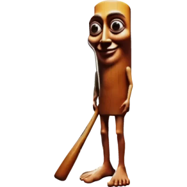

Styling a Webpage
CSS lets you change how HTML looks. You can set fonts, colors, spacing, and layout without changing the structure of the page.
This page uses a linked style.css file. The header, paragraphs, list, image, and footer are all styled with CSS rules that match the assignment requirements.
What This Page Includes
- Header with background color
- Two paragraphs with different fonts and colors
- Styled list with custom spacing
- Image with border, margin, and alignment
- Footer with smaller text and background color
